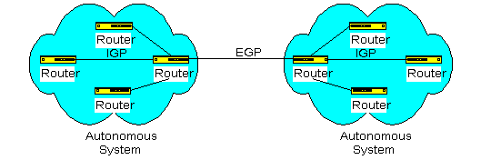
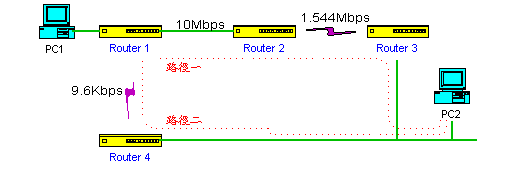
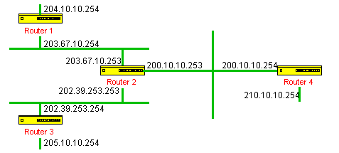
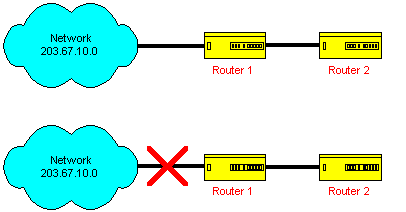
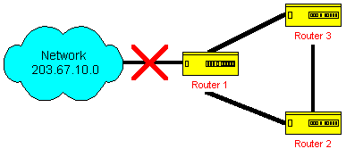

IP Routing Protocol -- RIP 之介紹
Routing Protocol 主 要 是 使 用 在 Router 和 Router 之 間 的 Protocol , 使 Router
能 自 動 地 學 習 其 他 Router 的 Routing Table , 並 進 而 更 新 自 己 的
Routing Table , 使 網 路 的 管 理 較 容 易 , 在 這 篇 短 文 中 將 介 紹 RIP 的
動 作 流 程 及 其 可 能 發 生 的 問 題 。
IP Routing Protocol 的 簡 介
在 TCPIP 網 路 架 構 中 有 所 謂 的 Autonomous System (AS) , Autonomous System
可 以 定 義 為 網 路 內 有 多 個 Router , 而 在 這 個 Autonomous System 中 使 用
一 個 Router 和 其 他 Autonomous System 來 交 換 Routing 的 資 料 稱 之 , 事
實 上 一 個 Autonomous SYstem 並 沒 有 定 義 一 定 要 具 備 幾 個 Router , 只 要
在 這 個 Autonomous System 中 使 用 一 個 指 定 的 Router 來 和 其 他 Autonomous
System 來 交 換 Routing 的 資 料 便 是 一 個 Autonomous SYstem , 而 在 一 個
Autonomous System 中 所 使 用 的 Routing Protocol 稱 之 為 Interior Gateway Protocol ,
簡 稱 IGP , 而 Autonomous System 及 Autonomous System 間 使 用 的 Protocol 稱 之
為 Exterior Gateway Protocol , 簡 稱 EGP , 通 常 IGP 中 有 RIP 及 OSPF , 而 EGP 中
有 EGP 及 BGP-4 等 Protocol , 雖 然 沒 有 定 義 一 個 Autonomous System 中 是
使 用 幾 個 Router , 但 是 要 架 設 數 個 Autonomous System 的 網 路 架 構 已 經 相
當 大 的 了 , 在 台 灣 機 會 是 很 少 , 但 是 使 用 RIP 及 OSPF 來 作 Routing
Protocol 的 機 會 卻 是 很 多 , 由 其 是 RIP 更 是 被 廣 泛 運 用。

圖 一 Autonomous System
RIP 的 介 紹
RIP 是 Routing Information Protocol 的 簡 稱 , 在 IP 環 境 中 有 RIP , 在 IPX
的 環 境 中 也 有 RIP , 雖 然 其 稱 呼 一 樣 , 功 能 也 類 似 , 但 實 際 是 不 一 樣
的 Protocol 。
RIP 是 一 個 很 簡 單 的 Routing Protocol , 是 採 用 Distance Vector 的 方 式 , 所
謂 Distance Vector 是 指 以 Router 的 個 數 來 作 為 距 離 的 判 斷 , 而 不 以
實 際 連 線 的 速 率 來 作 判 斷 , 所 以 在 某 些 時 候 所 選 的 路 徑 是 經 過 最
少 的 Router , 但 是 並 不 一 定 速 度 最 快 , 這 是 使 用 RIP 的 缺 點 之 一 , 圖
二 可 以 作 很 好 的 說 明

圖 二 Distance Vector 的 缺 點
在 圖 二 中 , 要 從 PC1 送 資 料 到 PC2 , 路 徑 一 是 經 過 三 個 Router , 其 每 段
皆 是 使 用 10Mbps 的 速
度 來 連 接 , 路 徑 二 經 過 了 二 個 Router , 但 有 一 段 連 接 是 9.6Kbps ,
很 明 顯 的 可 以 知 道 走 路 徑 一 速 度 較 快 , 但 是 使 用 RIP , Router 1 將 會 選 擇 路
徑 二 來 傳 送 資 料 , 因 為 路 徑 二 只 經 過 2 個 Router , 這 便 是 使 用 Distance
Vector 的 缺 點 。
在 RIP 的 使 用 中 經 常 會 提 及 Hop , 所 謂 Hop 是 指 經 過 Router 的 個 數 ,
以 圖 二 所 示 , 走 路 徑 一 的 Hop 數 為 3 , 路 徑 二 的 Hop 數 為 2 , 這 在
RIP 的 使 用 中 一 定 要 有 此 概 念 , 而 且 使 用 RIP 的 Hop 最 多 不 可 超 過
15 , 也 就 是 說 所 欲 Routing 的 資 料 無 法 經 過 16 個 Router , 這 也 就
限 制 了 RIP 無 法 使 用 在 較 大 型 的 網 路 中 。
RIP 是 Router 和 Router 間 對 談 時 使 用 的 Protocol , 是 以 Broadcast 的 方
式 來 傳 送 , 而 且 每 30 秒 便 傳 送 一 次 , 其 所 傳 送 的 是 本 身 全 部 的
Routing Table , 所 以 較 佔 網 路 頻 寬 , Router 收 到 別 的 Router 所 傳 送 的
RIP 資 料 , 便 會 將 這 些 的 Routing Table 資 料 的 Hop 數 加 一 , 同 時 將 其
加 入 其 本 身 的 Routing Table , 若 是 同 一 個 目 的 地 址 有 二 個 Routing 的 路 徑
時 , 將 以 Hop 數 少 的 路 徑 留 下 , 而 拋 棄 Hop 數 多 的 路 徑 , RIP 的 動 作
就 只 有 這 麼 簡 單 , 而 且 在 設 定 上 只 要 將 其 啟 動 即 可 , 實 在 是 太 容 易 了 。
使用 RIP 各 Router 學習的過程

圖 三 RIP 之 學 習
RIP 整 個 Routing Table 的 學 習 是 很 簡 單 的 , 以 圖 三 為 例 , 各 Router 的
介 面 IP Address 設 定 後 其 基 本 的 Routing Table 為
Router 1 之 基 本 Routing Table
| Destination | Netmask | Gateway | Metric |
| 204.10.10.0 | 255.255.255.0 | 204.10.10.254 | 0 |
| 203.67.10.0 | 255.255.255.0 | 203.67.10.254 | 0 |
Router 2 之 基 本 Routing Table
| Destination | Netmask | Gateway | Metric |
| 202.39.253.0 | 255.255.255.0 | 202.39.253.253 | 0 |
| 203.67.10.0 | 255.255.255.0 | 203.67.10.253 | 0 |
| 200.10.10.0 | 255.255.255.0 | 200.10.10.253 | 0 |
Router 3 之 基 本 Routing Table
| Destination | Netmask | Gateway | Metric |
| 202.39.253.0 | 255.255.255.0 | 202.39.253.254 | 0 |
| 205.10.10.0 | 255.255.255.0 | 205.10.10.254 | 0 |
Router 4 之 基 本 Routing Table
| Destination | Netmask | Gateway | Metric |
| 200.10.10.0 | 255.255.255.0 | 200.10.10.254 | 0 |
| 210.10.10.0 | 255.255.255.0 | 210.10.10.254 | 0 |
接 下 來 將 各 Router 的 RIP 功 能 Enable , 各 Router 便 會 開 始 送 出
RIP Packet , 這 整 個 動 作 是 自 動 執 行 , 假 使 Router 1 收 到 Router 2
的 RIP Packet , 則 Router 1 將 修 改 其 Routing Table 如 下
Router 1 Routing Table
| 序 號 | Destination | Netmask | Gateway | Metric | Source |
| 1 | 204.10.10.0 | 255.255.255.0 | 204.10.10.254 | 0 | Connected |
| 2 | 203.67.10.0 | 255.255.255.0 | 203.67.10.254 | 0 | connected |
| 3 | 202.39.253.0 | 255.255.255.0 | 203.67.10.253 | 1 | RIP |
| 4 | 200.10.10.0 | 255.255.255.0 | 203.67.10.253 | 1 | RIP |
上 表 中 序 號 3 及 序 號 4 是 由 Router 2 的 RIP Packet 學 習 來 的 , 您 會 問 為 什
麼 在 原 來 Router 2 的 Routing Table 中 203.67.10.0 的 路 徑 沒 有 更 改 Router
1 的 Routing Table , 因 為 Router 2 來 的 路 徑 需 在 Metric 即 Hop 加 一 , 結 果 比
Router 1 中 203.67.10.0 這 個 路 徑 的 Hop 數 大 , 所 以 將 此 路 徑 拋 棄 。
接 著 Router 2 收 到 Router 3 的 RIP Packet , Router 2 同 樣 會 更 改 其 Routing Table
如 下
Router 2 Routing Table
| 序 號 | Destination | Netmask | Gateway | Metric | Source |
| 1 | 202.39.253.0 | 255.255.255.0 | 202.39.253.253 | 0 | Connected |
| 2 | 203.67.10.0 | 255.255.255.0 | 203.67.10.253 | 0 | Connected |
| 3 | 200.10.10.0 | 255.255.255.0 | 200.10.10.253 | 0 | Connected |
| 4 | 205.10.10.0 | 255.255.255.0 | 202.39.253.254 | 1 | RIP |
接 著 Router 4 收 到 Router 2 的 RIP Packet , Router 4 的 Routing Table 如 下
Router 4 Routing Table
| 序 號 | Destination | Netmask | Gateway | Metric | Source |
| 1 | 200.10.10.0 | 255.255.255.0 | 200.10.10.254 | 0 | Connected |
| 2 | 210.10.10.0 | 255.255.255.0 | 210.10.10.254 | 0 | Connected |
| 3 | 203.67.10.0 | 255.255.255.0 | 200.10.10.253 | 1 | RIP |
| 4 | 202.39.253.0 | 255.255.255.0 | 200.10.10.253 | 1 | RIP |
| 5 | 205.10.10.0 | 255.255.255.0 | 200.10.10.253 | 2 | RIP |
接 著 Router 4 又 將 RIP Packet 送 到 Router 2 , 此 時 Router 2 的 Routing Table 如 下
Router 2 Routing Table
| 序 號 | Destination | Netmask | Gateway | Metric | Source |
| 1 | 202.39.253.0 | 255.255.255.0 | 202.39.253.253 | 0 | Connected |
| 2 | 203.67.10.0 | 255.255.255.0 | 203.67.10.253 | 0 | Connected |
| 3 | 200.10.10.0 | 255.255.255.0 | 200.10.10.253 | 0 | Connected |
| 4 | 205.10.10.0 | 255.255.255.0 | 202.39.253.254 | 1 | RIP |
| 5 | 210.10.10.0 | 255.255.255.0 | 200.10.10.254 | 1 | RIP |
接 著 Router 2 又 將 RIP Packet 送 到 Router 1 , 此 時 Router 1 的 Routing Table 如 下
Router 1 Routing Table
| 序 號 | Destination | Netmask | Gateway | Metric | Source |
| 1 | 204.10.10.0 | 255.255.255.0 | 204.10.10.254 | 0 | Connected |
| 2 | 203.67.10.0 | 255.255.255.0 | 203.67.10.254 | 0 | connected |
| 3 | 202.39.253.0 | 255.255.255.0 | 203.67.10.253 | 1 | RIP |
| 4 | 200.10.10.0 | 255.255.255.0 | 203.67.10.253 | 1 | RIP |
| 5 | 205.10.10.0 | 255.255.255.0 | 203.67.10.253 | 2 | RIP |
| 6 | 210.10.10.0 | 255.255.255.0 | 203.67.10.253 | 2 | RIP |
各 Router 間 便 以 RIP Packet 來 學 習 各 Router 的 Routing Table , 最 後 各 Router
的 Routing Table 將 如 下 所 示
Router 1 Routing Table
| 序 號 | Destination | Netmask | Gateway | Metric | Source |
| 1 | 204.10.10.0 | 255.255.255.0 | 204.10.10.254 | 0 | Connected |
| 2 | 203.67.10.0 | 255.255.255.0 | 203.67.10.254 | 0 | connected |
| 3 | 202.39.253.0 | 255.255.255.0 | 203.67.10.253 | 1 | RIP |
| 4 | 200.10.10.0 | 255.255.255.0 | 203.67.10.253 | 1 | RIP |
| 5 | 205.10.10.0 | 255.255.255.0 | 203.67.10.253 | 2 | RIP |
| 6 | 210.10.10.0 | 255.255.255.0 | 203.67.10.253 | 2 | RIP |
Router 2 Routing Table
| 序 號 | Destination | Netmask | Gateway | Metric | Source |
| 1 | 202.39.253.0 | 255.255.255.0 | 202.39.253.253 | 0 | Connected |
| 2 | 203.67.10.0 | 255.255.255.0 | 203.67.10.253 | 0 | Connected |
| 3 | 200.10.10.0 | 255.255.255.0 | 200.10.10.253 | 0 | Connected |
| 4 | 205.10.10.0 | 255.255.255.0 | 202.39.253.254 | 1 | RIP |
| 5 | 210.10.10.0 | 255.255.255.0 | 200.10.10.254 | 1 | RIP |
| 6 | 204.10.10.0 | 255.255.255.0 | 203.67.10.254 | 1 | RIP |
Router 3 之 基 本 Routing Table
| 序 號 | Destination | Netmask | Gateway | Metric | Source |
| 1 | 202.39.253.0 | 255.255.255.0 | 202.39.253.254 | 0 | Connected |
| 2 | 205.10.10.0 | 255.255.255.0 | 205.10.10.254 | 0 | Connected |
| 3 | 203.67.10.0 | 255.255.255.0 | 202.39.253.253 | 1 | RIP |
| 4 | 200.10.10.0 | 255.255.255.0 | 202.39.253.253 | 1 | RIP |
| 5 | 204.10.10.0 | 255.255.255.0 | 202.39.253.253 | 2 | RIP |
| 6 | 210.10.10.0 | 255.255.255.0 | 202.39.253.253 | 2 | RIP |
Router 4 Routing Table
| 序 號 | Destination | Netmask | Gateway | Metric | Source |
| 1 | 200.10.10.0 | 255.255.255.0 | 200.10.10.254 | 0 | Connected |
| 2 | 210.10.10.0 | 255.255.255.0 | 210.10.10.254 | 0 | Connected |
| 3 | 203.67.10.0 | 255.255.255.0 | 200.10.10.253 | 1 | RIP |
| 4 | 202.39.253.0 | 255.255.255.0 | 200.10.10.253 | 1 | RIP |
| 5 | 205.10.10.0 | 255.255.255.0 | 200.10.10.253 | 2 | RIP |
| 6 | 204.10.10.0 | 255.255.255.0 | 200.10.10.253 | 2 | RIP |
以 上 學 習 Routing Table 的 順 序 是 為 了 說 明 而 假 設 , 不 是 一 定 像 以 上 的 順 序
來 學 習 , 而 這 整 個 學 習 的 過 程 是 需 要 時 間 的 , 因 為 RIP 是 30 秒 發 送 一
次 RIP Packet。
學 習 來 的 Routing 路 徑 並 不 一 定 一 直 放 在 Routing Table 中 ,
為 了 節 省 Routing Table Buffer 的 空 間 便 有 所 謂 的 Aging Time , Aging Time 一 般
是 180 秒 , 從 RIP Packet 學 習 來 的 路 徑 一 放 入 Routing Table 中 Aging Time 便
從 180 秒 開 始 往 下 數 , 若 此 時 繼 續 收 到 原 路 徑 的 RIP Packet , 則 會 將 Aging
Time Reset 回 180 秒 , 若 一 直 沒 有 收 到 原 路 徑 的 RIP Packet , 同 時 Aging Time
也 下 數 到 0 , 則 會 將 此 路 徑 由 Routing Table 中 刪 除 。
Split Horizon
RIP 的 使 用 及 設 定 都 是 非 常 容 易 , 但 是 並 不 代 表 沒 有 其 他 的 問 題 , 主 要 的 問
題 在 某 一 個 Routing 不 通 時 , 其 整 個 RIP Routing 的 收 斂 的 速 度 較 慢 , 為 什
麼 會 發 生 這 個 問 題 , 由 圖 四 來 說 明

圖 四 RIP 的 收 斂 問 題
在 圖 四 的 上 圖 中 , Router 1 學 得 到 了 203.67.10.0 的 路 徑 , Hop 數 為 1 ,
而 且 將 此 一 路 徑
經 RIP Packet 送 給 Router 2 , 如 此 Router 2 也 有 到 203.67.10.0 的 路 徑 , Hop
數 為 2 , 一 切
皆 非 常 好 , 但 當 如 圖 四 下 圖 Router 1 到 203.67.10.0 的 路 徑 不 通 , 當 然
Router 1 在 得 不 到 原 路 徑 的 RIP Packet , 同 時 Aging Time 也 已 Count 到 0 時
會 將 此 路 徑 刪 除 , 但 此 時 Router 2
發 出 了 RIP Packet 給 Router 1 , 在 這 RIP Packet 中 還 有 含 203.67.10.0 的 路 徑 ,
Router 1 從 Router 2 送
來 的 RIP Packet 中 看 到 啊 Router 2 可 以 到 203.67.10.0 , 所 以 將 Hop 數 加 1 ,
並 加 在 Router 1 的 Routing Table 中 , 此 時 Hop 數 為 3 , 在 這 個 時 候 交 由
Router 傳 送 到 203.67.10.0 的
封 包 便 在 兩 個 Router 中 送 來 送 去 , 直 到 TTL 的 時 間 已 到 才 會 將 封 包 拋 棄 ,
180 秒 後 , Router 2 一 直 沒 有 收 到 原 路 徑 的 RIP Packet , 當 然 Router 1 送 來 的
RIP PAcket 有 含 203.67.10.0 的 路 徑 , 但 是 其 Hop 數 是 2 , 加 上 1 是 3 , 比
本 身 到 203.67.10.0 的 Hop 數 2 來 得 多 , 並 不 會 Update Routing Table , 結 果 往
203.67.10.0
的 路 徑 也 因 Aging Time 已 到 , Router 2 自 動 將 往 203.67.10.0
的 路 徑 從 Routing Table 中 刪 除 , 此 時 Router 1 又 送 來 其 RIP Packet , 其 中 又
有 往 203.67.10.0
的 路 徑 , Router 2 已 無 往 203.67.10.0 的 路 徑 , 所 以 將 此 路 徑 加 在 自 已 的
Routing Table 中 , Hop 數 是 4 , 如 此
來 來 往 往 最 後 Hop 數 到 達 16 , 兩 個 Router 才 沒 有 往 203.67.10.0 的 路 徑 ,
整 個 收 歛 的 動 作 才 完 成 ,
由 以 上 所 說 明 便 知 道 當 網 路 有 不 通 的 情 形 發 生 時 整 個 Routing 的 收
歛 速 度 是 很 慢 的 , 所 以 在 RIP 中 加 上 了 Split Horizon 的 功 能 , 這 個 功 能
是 自 行 啟 動 , 不 需 額 外 的 設 定 , Split Horizon 的 功 能 主 要 是 從 一 個 Router
學 得 的 路 徑 將 不 會 含 在 RIP Packet 中 送 回 原 Router , 這 樣 如 何 解 決 收 歛
速 度 慢 的 問 題 呢 ? 如 圖 四 203.67.10.0 的 路 徑 不 通 時 , Router 1 因 Aging Time
的 關 係 將 往 203.67.10.0 的 路 徑 刪 除 , 但 此 時 Router 2 還 有 往 203.67.10.0 的
路 徑 , 同 時 當 Router 2 送 出 RIP Packet 往 ROuter 1 時 不 會 含 往 203.67.10.0 的
路 徑 , 因 為 203.67.10.0 是 由 Router 1 學 得 的 路 徑 , Router 2 往 203.67.10.0 的
路 徑 也 將 會 在 Aging Time Count 到 0 時 自 動 刪 除 , 如 此 RIP 的 收 歛 問 題 便
解 決 了 大 半
。
Triggered Update
雖 然 使 用 Split Horizon 可 以 解 決 RIP 收 歛 的 問 題 , 但 是 在 有 些 情 況 下 仍
然 無 法 解 決 , 以 圖 五 為 例

圖 五 使 用 Split Horizon 無 法 解 決 RIP 收 歛 問 題
圖 五 中 203.67.10.0 的 路 徑 不 通 時 , Router 1 因 路 徑 不 通 所 以 不 會 將 203.67.10.0
的 路 徑 傳 送 給 Router 2 及 Router 3 , 因 使 用 Split Horizon , Router 1 及 Router 2 不 會
將 203.67.10.0 的 路 徑 再 傳 送 給 Router 1 , 但 是 Router 2 及 Router 3 的 Routing Table
中 仍 有 203.67.10.0 的 路 徑 , 若 Router 2 的 路 徑 203.67.10.0 先 Time Out , 此 時
Router 3 會 傳 送 203.67.10.0 的 路 徑 給 Router 2 , 而 Router 2 將 此 路 徑 置 於
Routing Table 中 , Hop 數 為 3 , 而 Router 3 會 將 203.67.10.0 的 路 徑 傳 送 給 Router 1 ,
因 為 這 個 路 徑 的 來 源 不 是 Router 1 , 而 是 Router 2 , 所 以 這 個 路 徑 便 會 這
三 個 Router 間 傳 來 傳 去 , 一 直 到 Hop 數 16 為 止 , 所 以 在 這 種 情 況 下 除 了
避 免 這 種 Loop 的 連 接 方 式 外 , 還 可 以 使 用 Triggered Update 的 方 式 來 解 決 ,
Triggered Update 是 指 當 Router 發 現 路 徑 不 通 或 路 徑 更 改 時 便 立 即 送 出
RIP Packet 給 其 他 Router , 而 且 只 送 有 更 改 的 部 份 , 若 斷 線 則 會 送 出 此 路 徑
之 Hop 為 16 的 RIP Packet , 所 以 在 圖 五 中 Router 1 若 知 道 203.67.10.0 的
路 徑 不 通 , 則 立 即 送 出 Triggered Update 的 RIP Packet , 則 Router 2 及 Router 3
便 立 即 知 道 203.67.10.0 是 不 通 , 所 以 其 收 歛 的 速 度 更 快 了 。
結 論
RIP 有 使 用 Distance Vector 的 問 題 , 又 有 收 歛 速 度 太 慢 的 問 題 , 但 其 還
是 使 用 較 廣 的 Routing Protocol , 是 因 為 其 設 定 非 常 簡 單 , 容 易 使 用 , 而 更
主 要 的 一 點 是 目 前 在 各 廠 商 的 UNIX System 中 在 Routing Protocol 的 支 援
都 只 有 RIP , 雖 然 OSPF 一 個 功 能 更 好 的 Routing Protocol 已 問 世 多 年 , 而
且 各 個 Router 廠 商 也 已 支 援 , 但 為 了 配 合 UNIX 主 機 , 所 以 只 好 還 是
使 用 RIP 來 作 其 Routing Protocl 。
Lastest Updated : 1996 年 02 月 16 日
若有話告訴我 , 請留下您的悄悄話 ,
同時也歡迎到葉建良的家坐坐